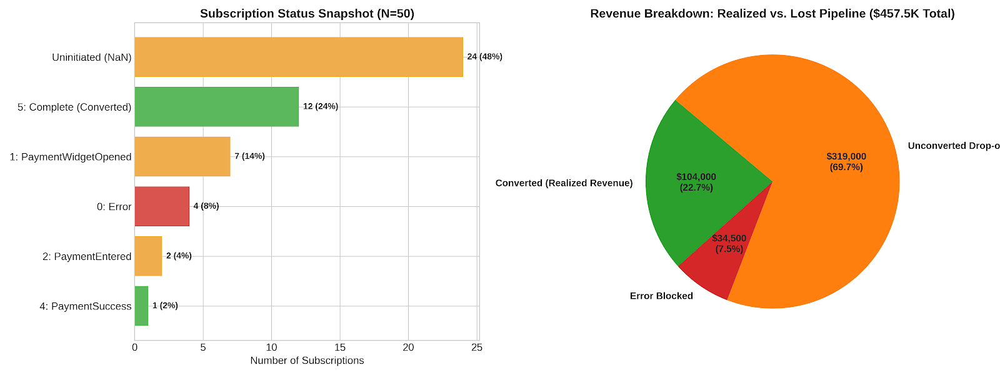
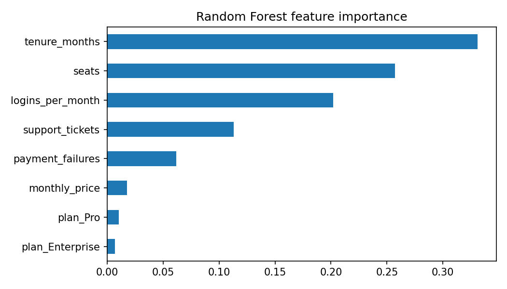
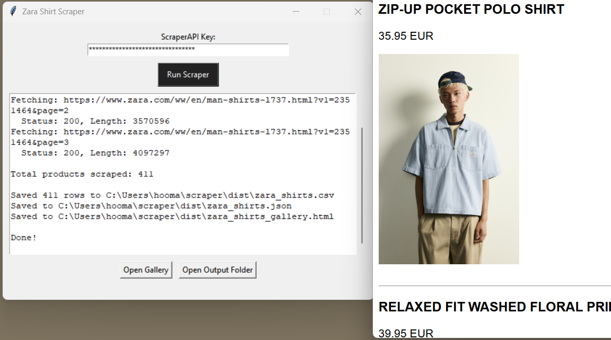
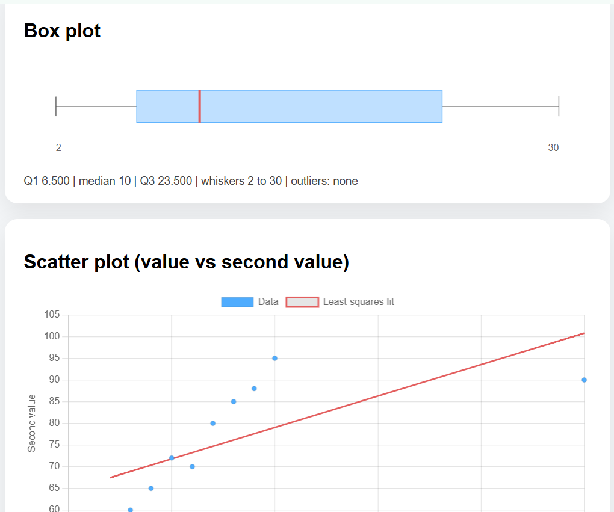
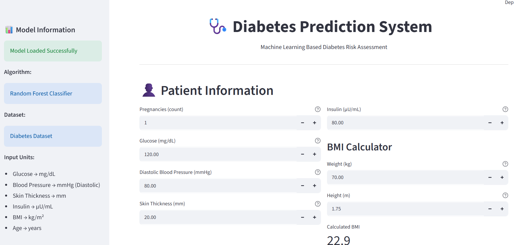

My Projects

Payment Funnel Analysis SaaS FinTech
This project analyzes payment funnel dynamics and checkout friction for enterprise B2B SaaS subscriptions. By evaluating payment status logs (payment_status_log) and customer subscription records, the analysis found that only 24.0% of subscriptions successfully convert to paid status, leaving $353,500 (77.3% of total pipeline revenue) uncollected.
View Project
SaaS Churn Prediction
A machine learning project that predicts which SaaS subscribers are likely to cancel, comparing three classification models and saving the best one for reuse
View Project
Zara Scraper
A Python notebook that scrapes men's shirt listings from Zara (name, price, and product image) and exports the results to CSV, JSON, and an HTML gallery.
View Project
CSV Analytics Dashboard (Spring Boot + MySQL)
A 50,000-row CSV uploads and charts in about 3.1 s (average of 3 runs), using batched JDBC inserts.
View Project
Diabetes Prediction System
A machine learning web app that estimates diabetes risk from patient health metrics. Built with Streamlit and a Random Forest pipeline trained on the Pima Indians Diabetes dataset (768 patients).
View Project Live Demo
Subtract
A free subscription tracker with no bank linking and no account to create. It shows every subscription, what it costs per year, and what renews next.
View Project Live Demo Indie Hackers